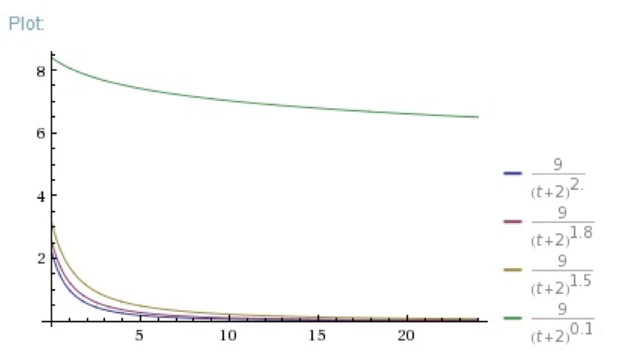
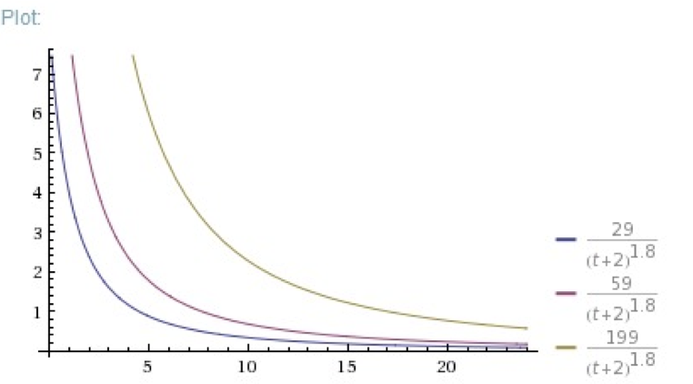
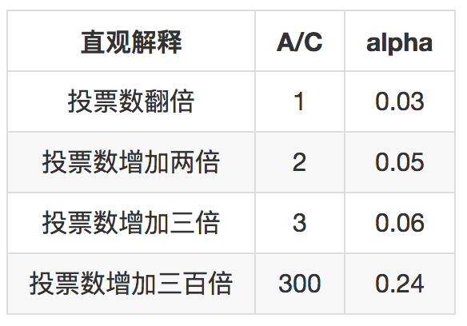

- 00 开篇词 用知识去对抗技术不平等.md.html
- 01 你真的需要个性化推荐系统吗_.md.html
- 02 个性化推荐系统有哪些绕不开的经典问题？.md.html
- 03 这些你必须应该具备的思维模式.md.html
- 04 画鬼容易画人难：用户画像的“能”和“不能”.md.html
- 05 从文本到用户画像有多远.md.html
- 06 超越标签的内容推荐系统.md.html
- 07 人以群分，你是什么人就看到什么世界.md.html
- 08 解密“看了又看”和“买了又买”.md.html
- 09 协同过滤中的相似度计算方法有哪些.md.html
- 10 那些在Netflix Prize中大放异彩的推荐算法.md.html
- 11 Facebook是怎么为十亿人互相推荐好友的.md.html
- 12 如果关注排序效果，那么这个模型可以帮到你.md.html
- 13 经典模型融合办法：线性模型和树模型的组合拳.md.html
- 14 一网打尽协同过滤、矩阵分解和线性模型.md.html
- 15 深度和宽度兼具的融合模型 Wide and Deep.md.html
- 16 简单却有效的Bandit算法.md.html
- 17 结合上下文信息的Bandit算法.md.html
- 18 如何将Bandit算法与协同过滤结合使用.md.html
- 19 深度学习在推荐系统中的应用有哪些_.md.html
- 20 用RNN构建个性化音乐播单.md.html
- 21 构建一个科学的排行榜体系.md.html
- 22 实用的加权采样算法.md.html
- 23 推荐候选池的去重策略.md.html
- 24 典型的信息流架构是什么样的.md.html
- 25 Netflix个性化推荐架构.md.html
- 26 总览推荐架构和搜索、广告的关系.md.html
- 27 巧妇难为无米之炊：数据采集关键要素.md.html
- 28 让你的推荐系统反应更快：实时推荐.md.html
- 29 让数据驱动落地，你需要一个实验平台.md.html
- 30 推荐系统服务化、存储选型及API设计.md.html
- 31 推荐系统的测试方法及常用指标介绍.md.html
- 32 道高一尺魔高一丈：推荐系统的攻防.md.html
- 33 和推荐系统有关的开源工具及框架介绍.md.html
- 34 推荐系统在互联网产品商业链条中的地位.md.html
- 35 说说信息流的前世今生.md.html
- 36 组建推荐团队及工程师的学习路径.md.html
- 加餐 推荐系统的参考阅读.md.html
- 结束语 遇“荐”之后，江湖再见.md.html
- 捐赠
21 构建一个科学的排行榜体系
前面的专栏文章中，我从最常见的内容推荐开始讲起，直到讲到了最复杂的深度学习在推荐系统中的应用原理，这些推荐算法都有一个特点：智能。
所谓智能，就是带有学习性质，能够和复杂的用户端形成互动，在互动过程中，算法参数得到更新和进化。
但是，智能这个高大上的词语，一定要以数据为前提的，我在专栏的第二篇文章中就和你透露过，推荐系统中有一个顽疾就是冷启动，冷启动就是没有数据，没有数据怎么和用户玩呢？
一个新用户来了，什么数据都还没有，推荐系统对其一无所知。这时候，你就需要一个排行榜了。
为什么要排行榜
排行榜，又名热门榜，听上去似乎是一个很常见的东西，原来它也算是推荐算法的一员？是的，它不但是，并且非常重要，而且其中也有不少的学问。
那么说排行榜到底有哪些用处呢？
- 排行榜可以作为解决新用户冷启动问题的推荐策略。这个不难理解，当一个新用户刚注册时，可以把最近产品中热门的物品推荐给他。
- 排行榜可以作为老用户的兴趣发现方式。即使是老用户，也可以在享受个性化推荐的同时去浏览热门的物品，从中看看哪些感兴趣，哪些不感兴趣，这些行为都是补充或者更新用户兴趣的数据来源。
- 排行榜本身就是一个降级的推荐系统。推荐系统本身是一个软件，因此也会有出现问题的时候，也会有推荐不出来的时候，这个时候考虑到服务的可用性，用排行榜作为一种兜底策略，可以避免推荐位开天窗。
今天，我就和你聊聊如何根据自己的产品特点构建一个合理的排行榜。
排行榜算法
最简单的排行榜，就是直接统计某种指标，按照大小去排序。在社交网站上，按照点赞数、转发数、评论数去排序，这是一种最常见、最朴素的排行榜。
类似的做法还有，在电商网站上按照销量去排序。
这样的做法也算是推荐算法？当然我确实很难说它不是，因为确实简单，容易上线运行，但我只能说这样做不靠谱，不靠谱的原因在于以下的几个问题。
- 非常容易被攻击，也就是被刷榜；
- 马太效应一直存在，除非强制替换，否则一些破了纪录的物品会一直占据在榜单中；
- 不能反映出排行榜随着时间的变化，这一点和马太效应有关。
既然朴素的排行榜有这些弊端，那么就针对他们来一一设计应对措施。
1.考虑时间因素
接下来，我要把用户给物品贡献的行为看做是用户在投票，这个很容易理解，好像热门的东西都是大多数人投票民主选举出来的。
排行榜中的物品，你可以想象它们每一个都是炙手可热的，都有一定的温度，那么这个温度按照热力学定律来讲，随着时间推移就一定会耗散到周围，温度就会下降。
或者，把排行榜想象成一个梯子，每个物品都在奋力往上爬，他们的动力来自用户的手动投票，物品本身都要承受一定的重力，会从梯子上掉下来，用户投票可以抵挡部分重力，投票数不及时或者不够，排行榜上的物品就会掉下来。
把这个规律反映在排行榜分数计算公式中，就比简单统计数量，再强制按照天更新要科学得多。Hacker News计算帖子的热度就用到了这个思想，它们的做法用公式表达是下面这个样子。
\[\\frac{P-1}{(T+2)^G}\]
公式中三个字母分别代表如下意义：
- P：得票数，去掉帖子作者自己投票。
- T：帖子距离现在的小时数，加上帖子发布到被转帖至Hacker News的平均时长。
- G：帖子热度的重力因子。
公式中，分子是简单的帖子数统计，一个小技巧是去掉了作者自己的投票。分母就是将前面说到的时间因素考虑在内，随着帖子的发表时间增加，分母会逐渐增大，帖子的热门程度分数会逐渐降低。
其中，重力因子的选择根据情况而定，重力因子越大，帖子的热度衰减越快，不同的重力因子对比如下图所示。

可以看到，重力因子越大，衰减越快。
再看一下，相同重力因子选择的情形下，不同的得票数的对比。

这这个示意图可以看到，这个公式仍然能够反映出相同时间的帖子之间的相对热度差别。
另一个考虑时间因素的排行榜算法是牛顿冷却定律。物品受关注度如同温度一样，不输入能量的话它会自然冷却，而且物体的冷却速度和其当前温度与环境温度之差成正比。将这一定律表述为公式就是下面的样子：
\[ T(t) = H + C e^{-\\alpha t} \]
公式中字母的意义如下。
- H：为环境温度，可以认为是平均票数，比如电商中的平均销量，由于不影响排序，可以不使用。
- C：为净剩票数，即时刻t物品已经得到的票数，也就是那个最朴素的统计量，比如商品的销量。
- t：为物品存在时间，一般以小时为单位。
- \(\\alpha\) ：是冷却系数，反映物品自然冷却的快慢。
问题来了，这个反映物品自然冷却快慢的 \(\\alpha\) 该如何确定呢？有一个更直观的办法。假如一个物品在时间过去B个单位后，因为增加了A个投票数，而保持了热门程度不变，那这样的话 \(\\alpha\) 应该是多少呢？简单把这个描述列成方程就是下面的样子。
\[ C e^{-\\alpha t} = (C+A)e^{-\\alpha (t + B)} \]
可以解得。
\[\\alpha = \\frac{1}{B}ln(1 + \\frac{A}{C})\]
用这个公式加上自己产品的要求来确定 \(alpha\) 就容易得多，假如按照B = 24，也就是过一天来看，我来举几个例子。

你可以在自己的产品中，设定一个假设，然后计算出相应的 \(\\alpha\) 来。
2.考虑三种投票
前面的热度计算方法，只考虑用户投票和用户弃权两种，虽然这种情况很常见，但是还有一些产品会存在运行用户投反对票的情形，比如问答网站中对答案的投票，既可以赞成，又可以反对。在这样的情形下，一般这样来考虑：
- 同样多的总票数，支持赞成票多的，因为这符合平台的长期利益；
- 同样多的赞成票数，支持最有价值的，同样这符合平台长期利益。
以国外某著名程序员问答网站为例，你就不要打听到底是哪个网站了，这个不重要，下面看一下他们对热门问题的热度计算公式：
\[ \\frac{(log_{10}Qviews)\\times{4} + \\frac{Qanswers \\times{Qscore}}{5} + \\sum_{i}{Ascore_{i}}} {(\\frac{Qage}{2}+\\frac{Qupdated}{2}+1)^{1.5}} \]
这个公式有点复杂，其中的元素意义如下：
- Qviews: 问题的浏览次数。
- Qanswers:问题的回答数。
- Qscore：问题的得分（赞成数-反对数）。
- Ascore：答案的得分。
- Qage: 问题发布距离当前的时间。
- Qupdated: 问题最后一次修改距离当前的时间。
这个问题热门程度计算方式，也考虑了时间因素。分母反映了问题的陈旧程度，修改问题可以让问题不要衰老过快。分子有三部分构成：
- 左边是问题的浏览量，反映了问题的受关注程度；
- 中间是问题的回答量和问题本身的质量分数的乘积，高质量、回答多的问题占优势；
- 右边是答案的总质量分。
3.考虑好评的平均程度
前面两种排行榜分数计算法，都是以用户投票的绝对数量作为核心的，那么换个思路来看，从比例来看也是可以的。这也是一些点评网站常常采纳的模式，比如电影点评网站通常会有一个Top250，这也是一种排行榜，以好评比例作为核心来计算排行榜分数。下面来看看这种排行榜。
一个经典的好评率估算公式，叫做威尔逊区间，它这样估算物品的好评率：
\[ \\frac{\\hat{p} + \\frac{1}{2n}z^2_{1-\\frac{\\alpha}{2}} \\pm z_{1-\\frac{\\alpha}{2}}\\sqrt{\\frac{\\hat{p}(1-\\hat{p})}{n} + \\frac{z^2_{1-\\frac{\\alpha}{2}}}{4n^2}} }{1 + \\frac{1}{n}z^2\\_{1-\\frac{\\alpha}{2}}} \]
实在是对不起你啊，又给你搞出了一个超级复杂的公式。实际上，你照着公式中所需的元素去统计就可以计算出排行榜了。我解释一下这个公式中所需的元素，你就可以照着去搬砖了，可以不必理解其中的原理。
- \(\\hat{p}\) 就是好评率，比如一百个点评的商品，99个给了好评，那么这个值就是0.99
- \(z_{1-\\frac{\\alpha}{2}}\) 是一个置信水平为 \(alpha\) Z统计量，这个查表就可以得到。
威尔逊区间考虑了评价的样本数，样本不足时，置信区间很宽，样本很足时，置信区间很窄。那么这个统计量有哪些应用呢，比如说下面的几个情况。
- 多大比例的人们会采取某种行为？
- 多大比例的人认为这是一个Spam？
- 多大比例的人认为这是一个“值得推荐的”物品呢？
当你为每一个物品都计算一个威尔逊区间后，你可以采用前面讲到的Bandit算法，类似UCB的方式取出物品，构建成一个略带变化的排行榜。
最后，为你呈上某电影点评网站为电影排行榜计算分数的公式，它是另一种对好评率的应用，针对评分类型数据的排行榜。
\[\\frac{v}{v+m} R + \\frac{m}{v + m} C\]
这个排行榜计算公式，也有一个响当当的名字，叫做“贝叶斯平均”。其中的元素意义描述如下：
- R，物品的平均得分，这个很简单，有多少人评分，把他们评分加起来除以人数就是了；
- v，参与为这个物品评分的人数；
- m，全局平均每个物品的评分人数；
- C，全局平均每个物品的平均得分；
别看这个公式简单，它反映了这么几个思想在里面：
- 如果物品没多少人为它投票，也就是评价人数不足，那么v就很小，m就很大，公式左边就很小，右边就很大，于是总分算出来很接近右边部分，也就是接近全局平均分C；
- 如果物品投票人数很多，那么v很大，m很小，分数就接近它自己的平均分R。
这个公式的好处是：所有的物品，不论有多少人为它评分，都可以统一地计算出一个合理的平均分数，它已经被国内外电影评分网站采纳在自己的排行榜体系中，当然，它们肯定各自都有根据实际情况的修改。
总结
今天，我主要讲到了三种构建排行榜分数的算法，因为排行榜的意义重大，所以不可以太随便对待，甚至应该比常规的推荐算法更加细心雕琢。
一个最最朴素的排行榜就是统计一下销量、阅读量等，但要让排行榜反映出热度的自然冷却，也要反映出用户赞成和反对之不同，还要反映出用户评价的平均水平。
你不要被前面那个非常大的一坨公式所吓倒，实际上，它统计起来很方便。这些公式都是在实际生产中演化而来的，你根据这些原理结合自己实际遇到的问题，也可以设计出符合自己业务要求的排行榜公式。
最后，提一个小问题给你，对于最后一个排行榜公式，如何改进才能防止水军刷榜？你可以给我留言，我们一起讨论。感谢你的收听，我们下次再见。

© 2019 - 2023 Liangliang Lee. Powered by gin and hexo-theme-book.